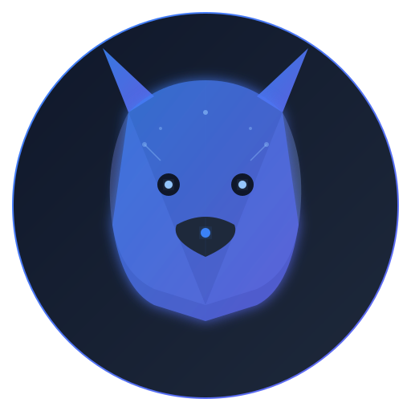

autolycusEnterprise AI Assistant — форк Hermes Agent с улучшенной безопасностью,
производительностью и корпоративными фичами.
bash <(curl -fsSL https://autolycus-agent.ru/install.sh)
Четыре режима безопасности: off → audit → simulate → enforce. Блокирует опасные команды до выполнения.
stdlib вместо subprocess для файловых операций. RTK-фильтр сокращает токены на 58% без потери данных.
Файловый LLM-контекст: 0.5ms/turn write, экономия 200MB+ RAM на длительных сессиях.
System Boundary Layer — FHS-классификация путей. Знает какие сервисы затронет изменение конфига.
Все фичи — плагины. Zero-conflict при merge с upstream. ClickHouse, Honcho, Ultra Governance.
White label, мульти-аренда, on-premise. ClickHouse memory provider для multi-tenant storage.
| Operation | Vanilla (subprocess) | Autolycus (stdlib) | Speedup |
|---|---|---|---|
| head -n 20 (10MB file) | 5.7 ms | 0.17 ms | ×33 |
| cat (10MB file) | 76.4 ms | 25.7 ms | ×3.0 |
| ls -la | 27.8 ms | 12.1 ms | ×2.3 |
| wc -l | 19.2 ms | 44.2 ms | ×0.4 * |
| RTK compression | — | 58% savings | 0.14ms overhead |
| Policy evaluate | — | 17 μs/call | negligible |
* wc -l быстрее через subprocess (C-оптимизирован). Средневзвешенное ускорение на типичной сессии: 2-5×